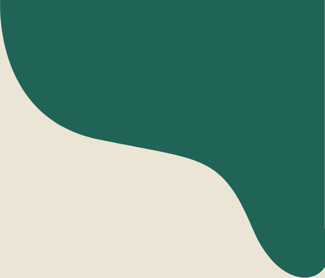
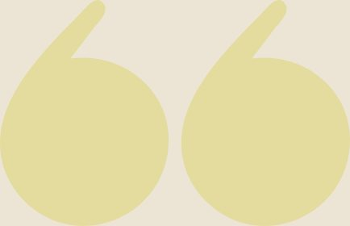
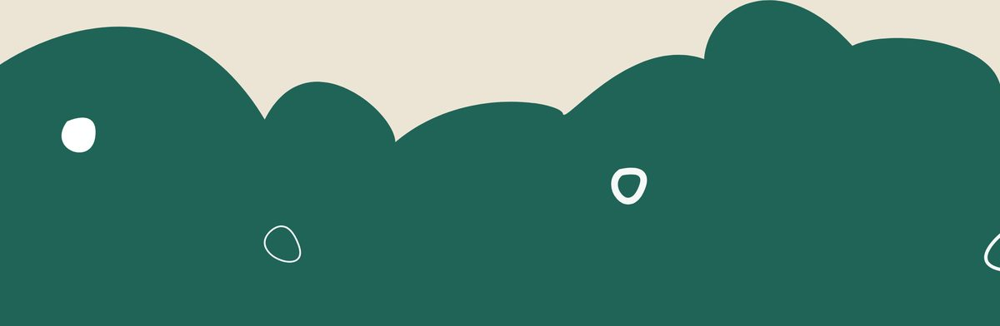

【徜扬恣肆·四】天下三分明月夜，二分无赖是扬州

天下三分明月夜，
二分无赖是扬州
Yangzhou，Jiangsu
我一直很喜欢行者无疆实践团，但却因自身原因错过了第一轮面试，好在最终成功补录成为财务专员，满怀期待地与大家一起进行扬州之旅。
实践前我们进行了两次见面会，经由此两次会议大家相识相知。从开始记不住大家的名字到后来的谈笑风生。随着调研的进行，我们也渐渐熟络起来。在此期间，担任财务专员的我负责记录团队的开支，从一开始报销各种费用、预定车票到后来的因为疫情原因办理退票手续我都在努力做好每一步。虽然没有办法和大家共赴淮扬相聚在民宿中，走遍各大文化古迹，心里有些失落，但是通过线上学习的方式了解扬州这座古城，也是一个难得的机遇。

扬州因运河而起，因盐商而富。在线上社会实践的过程中，我们欣赏了扬州的美丽风光，品尝了扬州的传统小吃，欣赏了各类非遗文化的高超技艺，参观了古色古香的博物馆。扬州之行在于惬意，体验当地的风俗文化，就是像扬州人一样用心感受生活，仿佛时间都在这座城市慢了一拍。扬州的美，是古典与现代的碰撞，是历经时间打磨后的产物，它的美躲在瘦西湖的垂柳之后，藏在老城斑驳的石板路里，蕴含在各色各样的美食之中，充满了无尽的浪漫与诗意。
在队长的努力下，我们有幸与扬州八怪纪念馆的倪主任进行线上交流。在创作中尽情展现个性，在作品中突破美和丑的边界。倪主任出口成章，对扬州文化的热爱深深的感动着我，他在谈论扬州八怪时，不时穿插扬州知识的介绍，对过去的赞赏，对未来的展望。面对我们，他见到了年轻的思想；作为前辈，他高谈阔论，不断告诫我们人生的道理，使我们获益匪浅。

所有的相聚终有一别，
但扬州文化的熏陶将永刻我的心上。
愿疫情过去之时，
我可以带着这份文化信仰，
独自踏上扬州的旅程，
去亲眼领略线上观赏的这一切。

来源 | 行者无疆实践团
文字 | 曹祺璇
编辑 | 杨静
审核 | 付媛 康艳虎